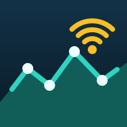
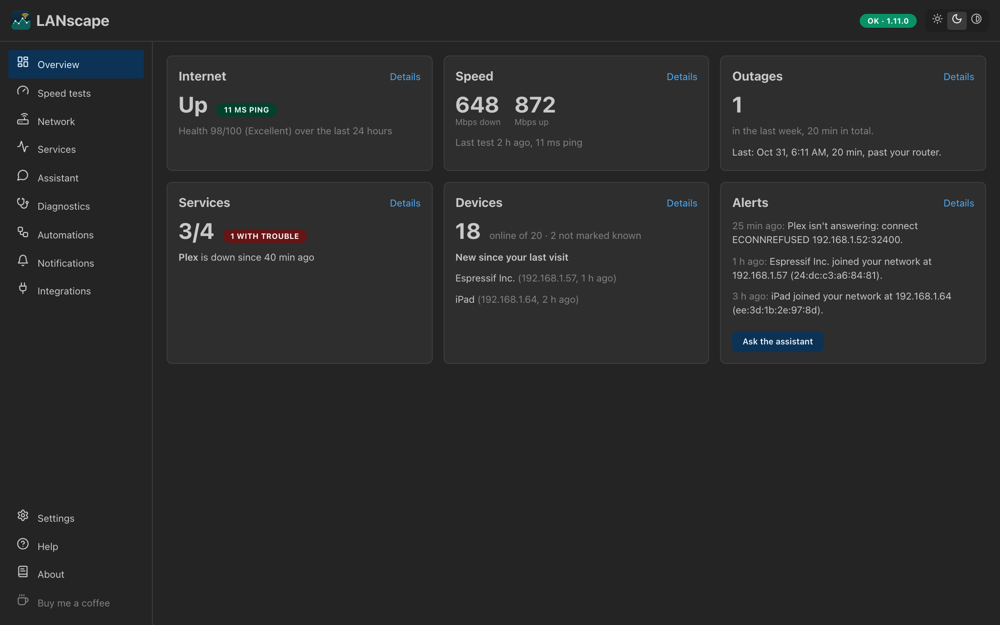
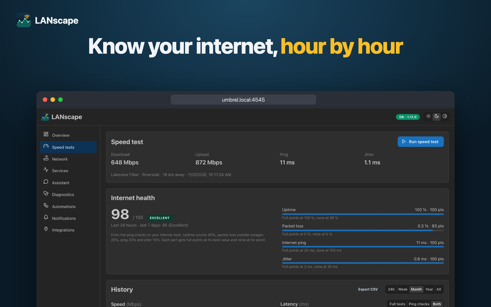
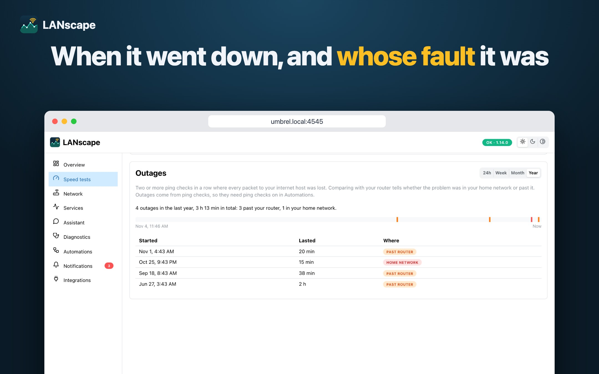
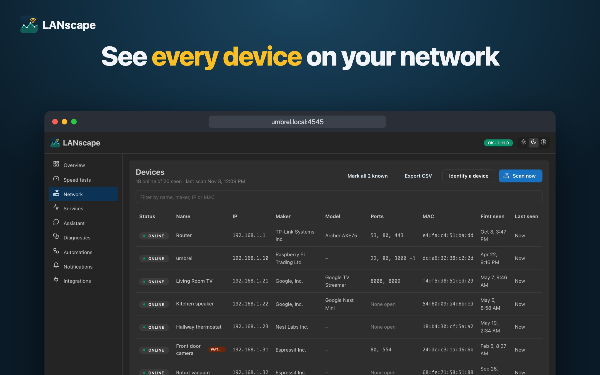
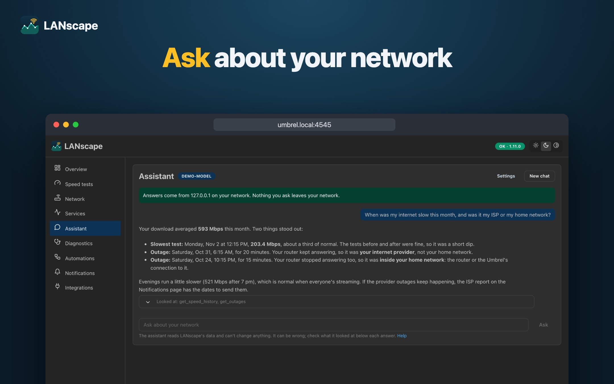
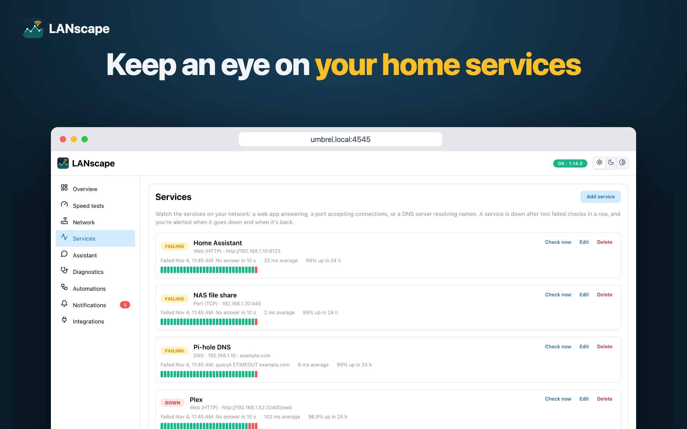
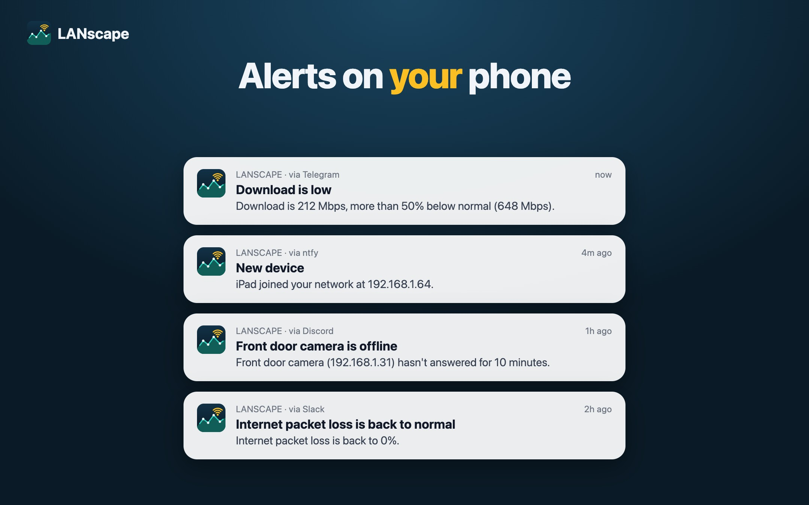

LANscapeSpeed tests, outages and whose fault they were, every device on your network, the services you rely on, and alerts when something changes. Free and open source, running on your own Umbrel or Docker host.

No cloud account needed; the AI parts are optional.
Internet up or down, a 0–100 health score, the latest speed, outages, services with trouble, new devices and recent alerts at a glance.
On demand or on a schedule, with history from a day to all time and a weekly pattern against your plan speeds.
Ping checks every minute spot outages and tell whether the problem was your internet provider or your home network.
Maker, model and name for everything on your LAN, with history that follows phones across private MAC addresses.
Watch Home Assistant, a NAS, Plex or Pi-hole over HTTP, TCP or DNS, and hear when they go down and come back.
Rules on speed, ping and packet loss, new and offline devices, through ntfy, Telegram, Discord, Slack or a webhook.
A one-click check from router to internet, with a plain-language verdict and a report for your ISP.
An optional AI assistant answers questions from your data, with a model on your own network or Claude or OpenAI. Read-only MCP tools for AI agents too.
Screenshots from invented demo data.






Free. Your data stays on your machine.
https://github.com/SuarezLuis/umbrel-apps.Save as compose.yaml and run docker compose up -d, then open port 4545.
services:
lanscape:
image: ghcr.io/suarezluis/lanscape:latest
restart: unless-stopped
network_mode: host
init: true
environment:
APP_PASSWORD: "choose-a-long-password"
volumes:
- ./data:/data